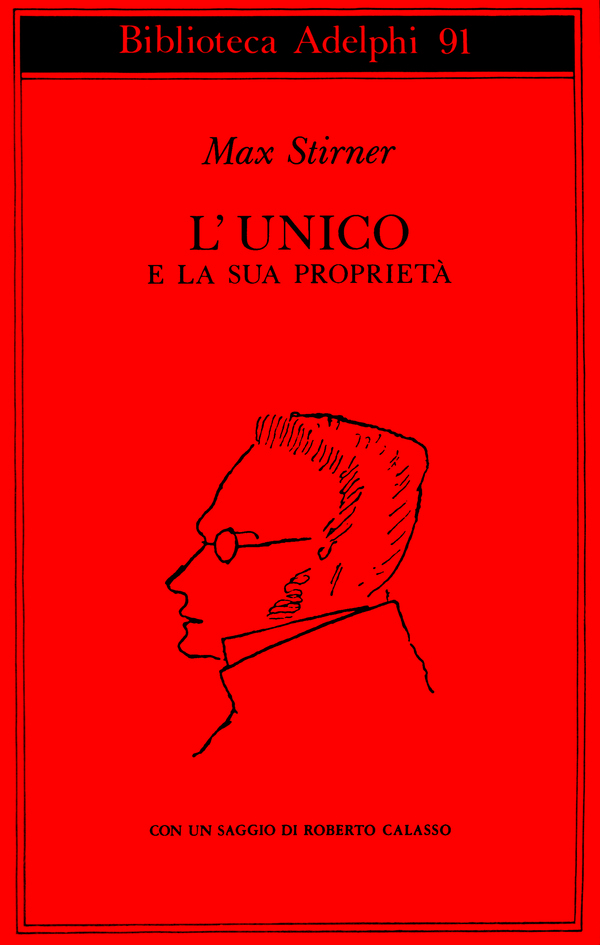

25:56 · 5 OPERE
L'attacco al Venezuela in diretta dal Pentagono.
Il filo del discorso
Dr Divago apre il contributo datandolo al 3 gennaio 2026 e raccontando di aver osservato nella notte luci e automobili al Pentagono, collegandole al successivo annuncio dell’attacco statunitense in Venezuela. Da questa testimonianza personale passa al problema dei criteri con cui vengono giudicate le guerre. Il Defensor pacis e gli appelli contro il pericolo nucleare accompagnano la richiesta di un’etica condivisa. Un esempio quotidiano, il barattolo di miele, serve poi a distinguere il riconoscimento di un fatto dalla pretesa di possedere una verità assoluta. Stirner e Sofocle entrano nella riflessione sulla dignità del singolo, mentre il richiamo alle cose impossibili credute dalla regina di Carroll accompagna la critica ai doppi criteri geopolitici. La conclusione insiste sui rischi nucleari e sulla responsabilità di discutere la guerra senza ridurla a una contrapposizione fra appartenenze.
I libri nel discorso

Il difensore della pace (Defensor pacis)
Note sul riferimento
Copertina: Cambridge University Press · The Defender of the Peace · 2005 · Annabel Brett
Copertina autentica della traduzione inglese Cambridge 2005 della stessa opera nominata in latino. Non è la copertina dell’edizione BUR e non indica quale edizione conosca il relatore.
Il titolo latino Defensor pacis è pronunciato nel richiamo all’etica della pace.

Manifesto Russell–Einstein
Identificazione probabile
Note sul riferimento
Fotografia della presentazione del manifesto nel 1955: Pugwash · documento del 9 luglio 1955 · fotografia della presentazione alla stampa
Fotografia della conferenza stampa del 1955 pubblicata da Pugwash a corredo della storia del manifesto. È un’illustrazione documentaria, non una copertina né una pagina del testo.
Einstein, Russell, anni Cinquanta e appello o manifesto contro la guerra nucleare: associazione probabile al documento del 1955; Schweitzer non è un firmatario.

L’unico e la sua proprietà
Note sul riferimento
Copertina: Adelphi, Biblioteca 91, 1979; traduzione di Leonardo Amoroso
Copertina dell’edizione Biblioteca Adelphi 91, con un saggio di Roberto Calasso. Edizione scelta come riferimento iconografico; nessuna edizione è confermata nel video.
Max Stirner e il titolo, reso come il singolo e la sua proprietà, sono annunciati.

Antigone
Note sul riferimento
Copertina: Einaudi · Collezione di teatro · edizione di riferimento
Immagine associata all’ISBN di riferimento e controllata visivamente; edizione e traduzione non identificate come quelle citate o lette nel video.
Sofocle, Antigone e il coro sull’essere umano sono richiamati.

Attraverso lo specchio e quel che Alice vi trovò
Identificazione probabile
Note sul riferimento
Copertina: Alter Ego Edizioni · Gli Eletti · Attraverso lo specchio
Immagine autentica dell’opera, controllata visivamente; l’edizione di riferimento non è attribuita al filmato.
La regina e le cose impossibili prima di colazione richiamano Attraverso lo specchio V; il parlato nomina invece il Paese delle Meraviglie.